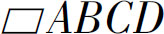
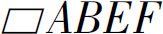
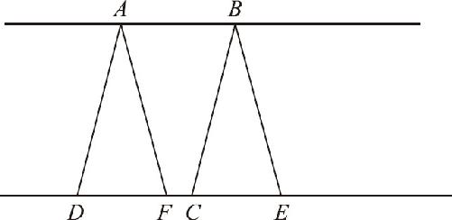
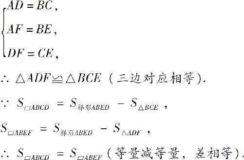
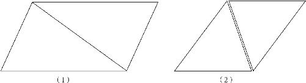

在前文中，我们提到了三角形全等的最后一个判定定理角边角，而且我们还知道了平行线之间的距离不变．那么，这个定理又能提供给我们哪些帮助呢？我们又是证全等，又是尺规作图，研究了这么久，却仍然只能证明两个全等的图形面积相等．如果是不一样的图形，我们怎么知道它们的面积是不是相等呢？接下来我们就来讨论这个问题．
我们在小学阶段就曾经学过，平行四边形的面积等于底乘以高，三角形的面积等于底乘高除以2．那么，只要我们证明了平行线之间的距离不变，就可以知道，夹在两条平行线之间的任意形状的平行四边形，高度都是相同的，因此只要它们的底边相同，面积也就是相等的．同理，三角形的面积是平行四边形的一半，平行四边形面积不变，三角形的面积当然也是不变的．不过，通过底乘高计算面积的方式，那是小学数学的方式，而几何学是没有数字的数学．所以，要通过标准的逻辑推理来证明，夹在两条平行线之间的同底的平行四边形为什么面积相等．就是要在不知道平行四边形的面积是多少，甚至不知道平行四边形的面积公式怎么计算的情况下，证明它们的面积是相等的，这也恰好就是几何学的魅力所在．
如图7－5所示，AB 和DE 是两条相互平行的直线，而四边形ABCD 和ABEF 就是夹在这两条平行线之间的两个平行四边形，它们有一个共同的底边AB ．现在我们要证明的是：

的面积等于
的面积．如果不能利用底乘高的公式，要证明这个问题，我们就必须要回归到面积的本质：
图7－5
面积就是图形的大小，我们要证明这两个图形的面积相等，就是证明它们的大小相同，然而，这两个四边形的形状却是不相同的，直接对比得不到结果，我们就只能借助其他图形的帮助．根据《几何原本》的基本公理，我们知道，等量加等量和相等，等量减等量差也相等．那么这两条公理有哪一条是可以利用的呢？我们考虑通过等量减等量的方式去寻找答案，那么这两个四边形可否由同一个形状裁剪出来呢？显然，图示呈现给了我们一个梯形ABED ，我们在这个梯形中裁剪掉右侧的△BEC 就可以得到左侧的平行四边形ABCD ；在梯形中裁剪掉左侧的△ADF 就可以得到右侧的平行四边形ABEF ．因此，只要我们证明了被裁减下去的两个三角形△BEC 和△ADF 全等，就可以知道这两个平行四边形的面积是相等的．按此思路，得到完整的证明过程如下：
∵四边形ABCD 是平行四边形，
∴AD ＝BC ，AB ＝DC （平行四边形的对边相等）．
∵四边形ABEF 是平行四边形，
∴AF ＝BE ，AB ＝EF （平行四边形的对边相等）．
∵DC 和EF 都等于AB ，
∴DC ＝EF （等量代换）．
∵DC ＝DF ＋FC ，FE ＝FC ＋CE （整体等于部分之和），
∴DF ＝DC －FC ＝EF －FC ＝CE （等式变形）．
在△ADF 和△BCE 中：

梯形的面积减去两个全等的三角形面积之后，剩下的平行四边形的面积，一定是相等的．就这样，我们终于找到了一对不全等的图形，面积也是相等的．而且，还是在我们不知道这两个图形的面积是多少的情况下得到的．
于是我们知道，当一个平行四边形的底边被固定在两条平行线之间后，平行四边形的另外两条侧边就可以在两条平行线之间摆来摆去，无论它的形状怎么变化，无论它扭曲成什么样子，只要高度不变，它的面积也总是保持不变的．在所有平行四边形中，最典型的就是四个角都是直角的矩形．当平行四边形扭转成矩形的时候，它的底边就变成了长方形的长，它的高度就变成了长方形的宽，因此平行四边形的面积才可以通过底乘以高来表示．从而我们知道，靠底乘高来计算平行四边形的面积的方法只是这个定理的一个推论、一个特例而已．
那么，卡在平行线之间的，同底边的三角形面积呢？因为三角形的面积是平行四边形面积的一半，由于平行四边形面积相等，所以呢，三角形的面积也就应该相等了．不过，我们还是有必要解释一下，为什么三角形的面积等于平行四边形面积的一半．
由于平行四边形的两组对边相等，如果在平行四边形内增加一条对角线［如图7－6（1）所示］，就可以看到：平行四边形被分割成了两个三角形，在这两个三角形中：外边的两条边对应相等，中间又是一个公共边，由于三组对边分别相等，所以这两个三角形必然全等，因此三角形的面积当然就是平行四边形面积的一半了．

图7－6
同样，如果我们从一个三角形出发，也可以作出一个面积增大了一倍的平行四边形，当一个三角形尖朝上放置时，我们只要把这个三角形复制一遍再倒转180°，尖朝下和这个三角形拼在一起，就可以完美地拼成一个平行四边形．［如图7－6（2）所示］因此，我们可以知道，三角形的面积当然就是平行四边形面积的一半了．卡在两个平行线之间的同底边的三角形面积相等．
那么，明白了等底等高的三角形面积不变之后，又会给我们哪些帮助呢？古埃及的土地形状又不是都是等底等高的．实际上，一旦我们懂得了三角形面积变换的方法，就掌握了世界上所有图形的变换方法，通过这个方法，我们不仅可以把平行四边形变成矩形，我们还可以把梯形变成平行四边形，把任意四边形变成梯形，把任意的多边形变成四边形．这就意味着，我们就可以在保持面积不变的条件下，进行任意形状的图形变换，那么，这个变换过程具体又该怎么操作呢？